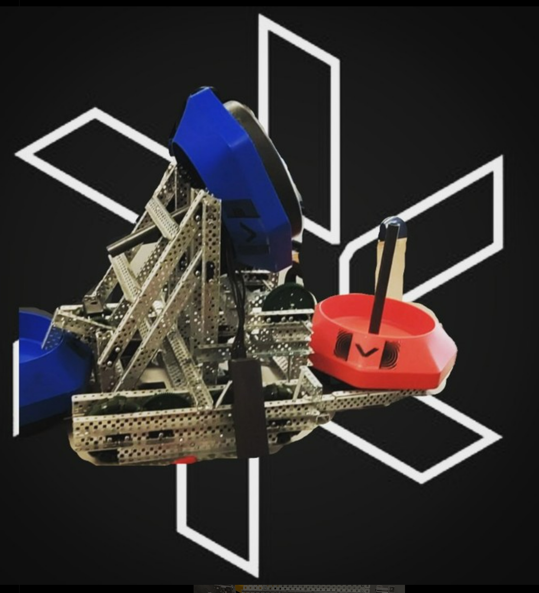
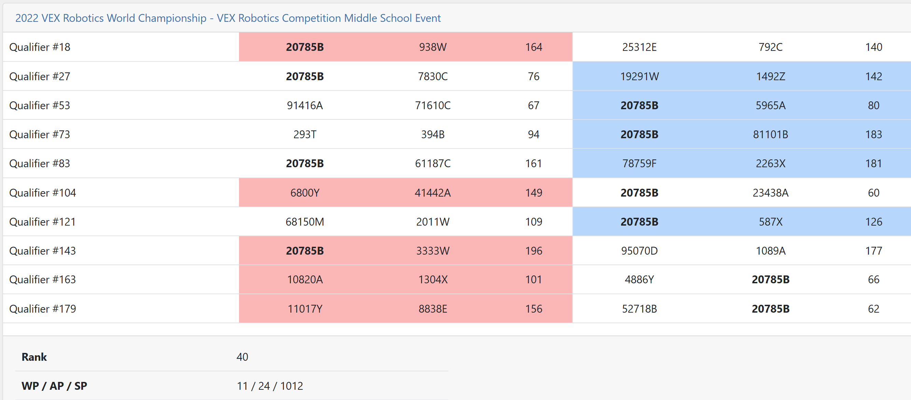
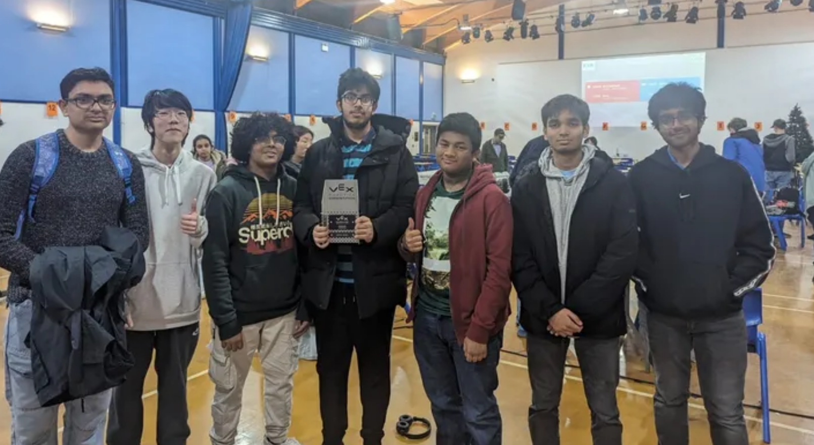
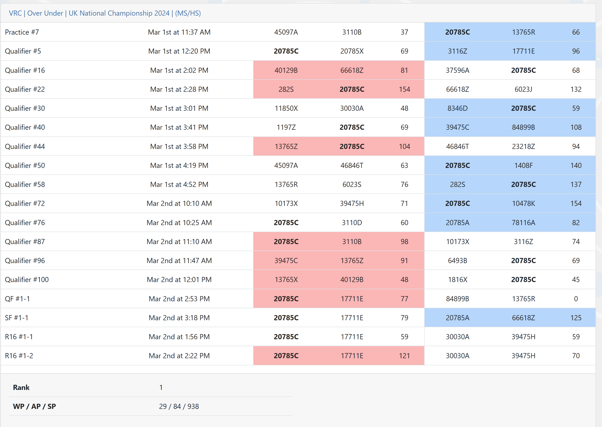

I participated in VEX Robotics during Secondary School. Here are some of the highlights:
2021-2022
 I was team captain of 20785B Vortex Invicta. We competed in various VEX Robotics competitions and achieved significant success, including qualifying for the VEX Robotics World Championship. I was also head programmer for our team, leading the development of our robot's autonomous and driver-controlled functionalities using VEXcode Pro (C++). This year, we won the Judges' Award at the VEX Robotics National Championship. The whole team were new to robotics and we had to learn everything from scratch, so this award was a testament to our hard work and dedication.
2022-2023
In this season, I didn't compete but I mentored 20785C, a middle school team. None of them had any prior robotics experience which meant I had to teach them the basics of robotics and programming. It was a rewarding experience to see them grow and develop their skills throughout the season, especially in such a difficult season design and programming-wise.
2023-2024
 In this season, I competed as team captain of 20785C Override, also working on programming (PROS C++ as well as Web design with HTML/CSS/JavaScript) and design. We again qualified to the VEX Robotics World Championships but didn't attend due to exams. Instead, we went to Mecha Mayhem, a signature event, in Calgary. The highlight of the season was ranking first in our division at the UK National Championships.
2024-2025
This season, I tried to do an independent team, which involved doing all the work myself, from design to programming to building to strategy. It was stopped short because of personal reasons but it was still an immense learning experience.
Student Advisory Board
I was selected to be a member of the VEX Robotics Student Advisory Board for the 2023-2024 season. This involved providing feedback to VEX Robotics on various aspects of the program, including the competition structure, rules, and resources. It was a great opportunity to contribute to the VEX Robotics community and help improve the experience for other students. I was selected due to helping people around the world with programming and design via VEXForum.
Volunteering
I have volunteered at various VEX Robotics events, mainly 3 competitions hosted at my school, across V5RC and VEX IQ. I have judged and refereed and I am looking forward to volunteering more at different competitions going into the future.
Skills Developed
- Leadership: As team captain, I developed strong leadership skills, learning how to motivate and manage a team effectively. This was especially true because of high turnover meaning every season there were people new to robotics who weren't as enthusiastic and put off by the high skill requirement.
- Programming: I gained proficiency in C++ programming using VEXcode Pro and PROS, developing both autonomous and driver-controlled functionalities for our robots. I also helped with web design using HTML, CSS, and JavaScript.
- Problem-Solving: Robotics competitions often present unexpected setbacks, as well as requirement for original thinking - like using zip ties to touch the elevation bar in Over Under.
- Collaboration: Working closely with my teammates taught me the importance of effective communication and teamwork in achieving common goals, as well as the importance of sticking to deadlines.
- Technical Skills: I learned about mechanical design, electronics, and sensor integration, enhancing my understanding of robotics systems. I also worked a lot with CAD such as SolidWorks, being certified as a SolidWorks Expert by the end.
Overall, my experience in VEX Robotics has been incredibly rewarding, providing me with valuable skills and experiences that will benefit me in future endeavors.